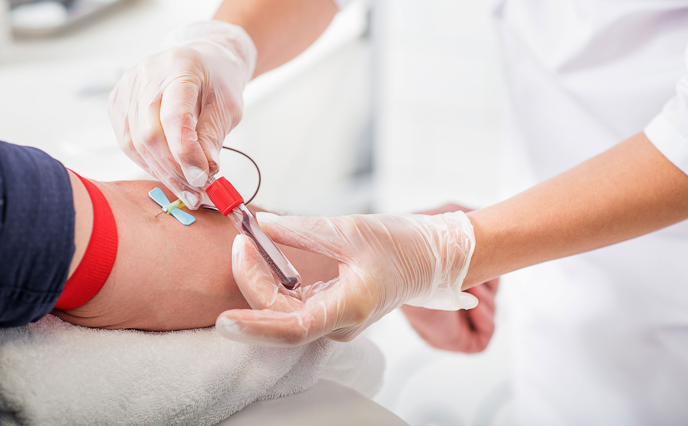
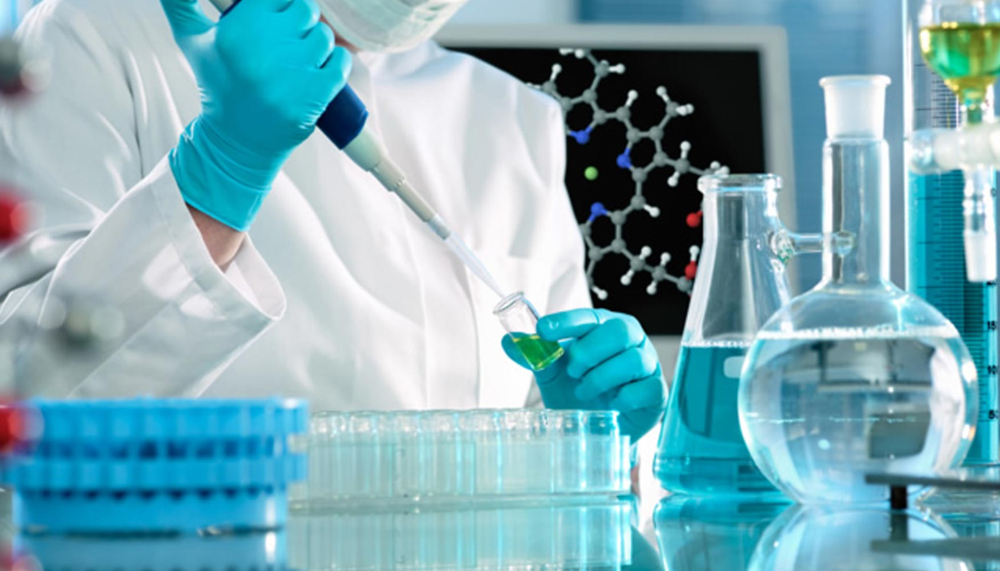

¿Por qué LIMS Laboratorio?

Área de Extracción
Protocolos seguros para la toma de muestras ambulatorias y pediátricas bajo estrictas normas de bioseguridad.

Control de Calidad
Validación automatizada de estándares analíticos y reactivos mediante nuestro sistema integrado LIMS.

Portal de Resultados
Acceso digital inmediato a informes de laboratorio validados con firma electrónica para médicos y pacientes.